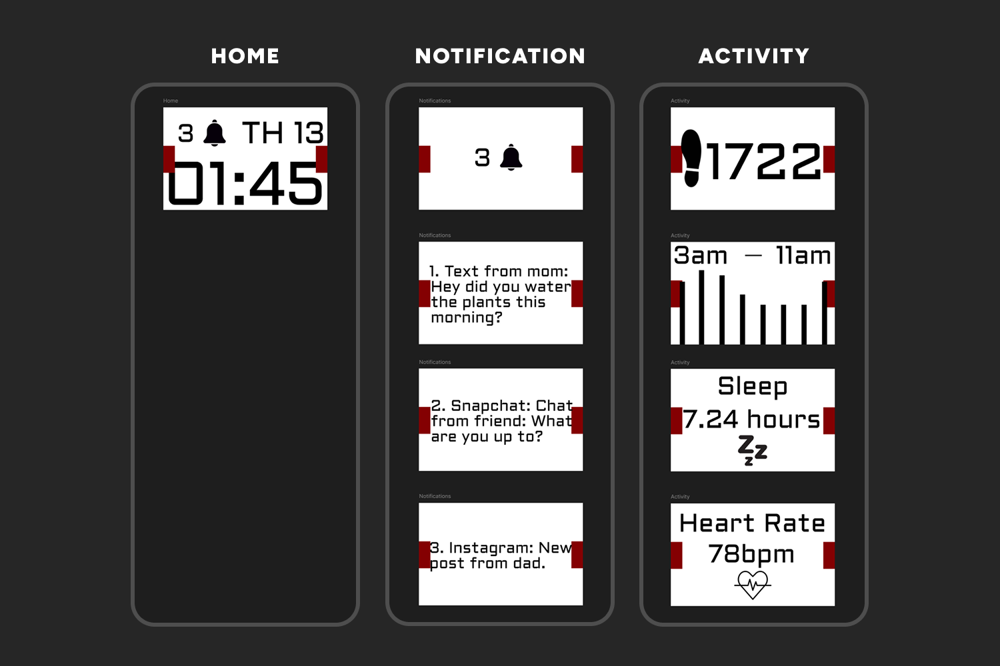
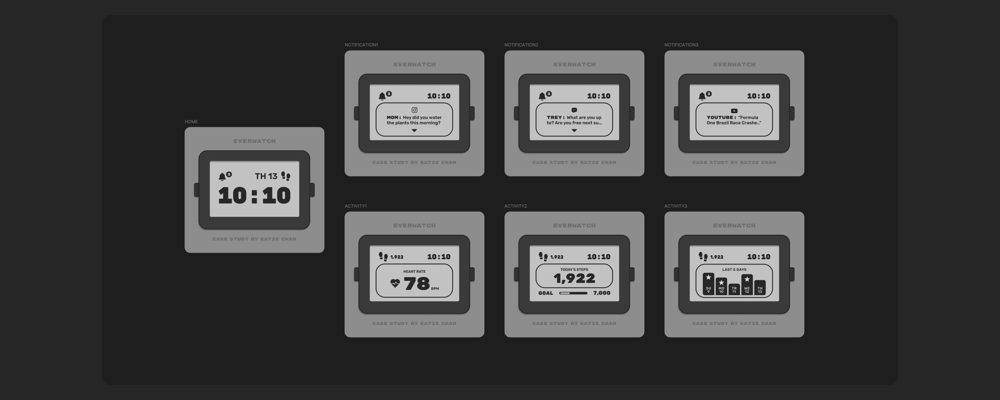

Everwatch
Case Study of the revised Everwatch display
The Problem
The Everwatch had a functional but uninspired interface. The original design lacked personality and clarity, making a minimalist watch feel a lot more complicated than it needed to be.

I was given an original Figma prototype for a smart watch concept called the Everwatch. It features an e-ink display and is built around simplicity with no extra apps, just the essentials for battery longevity. The original file included all the pages they wanted, but the navigation felt a bit flat and needed to be updated to a more modern design.
I focused on making the navigation feel natural and intentional. I redesigned the home screen to show the current time, day name, day number, and a notification icon. Clicking the right button from home opens notifications with texts and alerts. Clicking the left button shows activity tracking with steps, heart rate, a daily step goal, and a weekly tracker. I built a fully clickable Figma prototype so every button actually changes the screen, which you can try here. I tested the flow to make sure users never felt lost and kept the e-ink aesthetic clean with high contrast and minimal detail.
Growth and Insights
This project reminded me that minimalism is harder than it looks. Stripping away features is easy, but keeping the remaining ones intuitive takes real thought. I learned to appreciate the constraints of a simple display, it forces you to prioritize what matters most. Building a fully clickable prototype in Figma made a huge difference. I could actually simulate how a user would move between screens, which revealed issues in my process that were missed. It also showed me that even a simple product needs careful information architecture. The Everwatch became a lesson in restraint and the value of testing interactions early, not just visuals.
